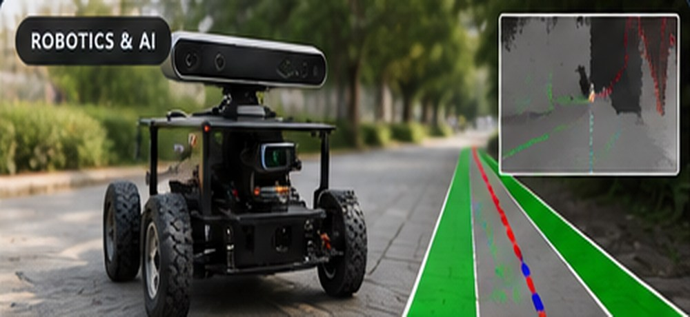

Steering geometry
Study the relationship between vehicle motion and steering configuration in an Ackerman-type mobile robot.
ROBOTICS & AI · CONTROL SYSTEMS
A robotics engineering project focused on trajectory tracking and control simulation for a mobile robot with Ackerman steering.

Conceptual cover artwork; not an image of the physical platform or simulation results.
Mobile robots with steering constraints require coordinated motion and control to follow a desired trajectory. This project explores trajectory tracking and control through simulation, connecting mathematical modeling with engineering implementation.
Study the relationship between vehicle motion and steering configuration in an Ackerman-type mobile robot.
Examine how a simulated robot can be guided along a reference trajectory.
Use a simulation-based workflow to explore robot behavior under steering and motion commands.
This project complements my data analytics portfolio with experience in dynamic systems, technical problem solving, control and simulation. Detailed quantitative performance claims are intentionally omitted until they can be verified against the source implementation.